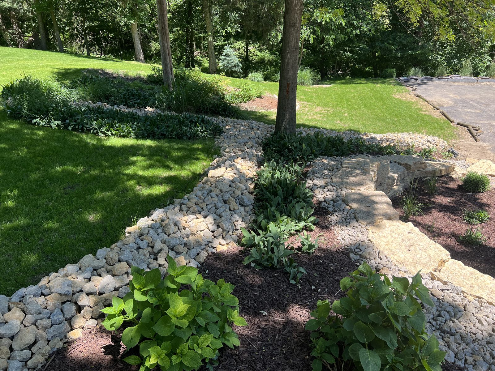

October 22, 2026 · New View Landscaping
A Midwest winter works on a property all season long. Water soaks in, freezes, expands and thaws again, and a yard that looked fine in September can show every weak spot by March. The good news is that most of the damage comes from a short list of things, and almost all of them can be dealt with in the next few weeks, before the ground locks up.
Start with where the water goes. Walk the outside of the house after the next rain and look at the soil right next to the foundation. The ground should drop away from the house, not slope toward it. Low spots, settled soil and downspouts that dump right at the wall all send meltwater to the one place you don't want it. Extend downspouts several feet out, and fill small low spots with soil so they don't hold ice over winter. If water already pools in the same place after every rain, that's a grading problem, and it's much easier to plan a fix now than to find it under snow in February.
Next, the lawn. Keep mowing as long as the grass is growing, and make the last cut of the year a little shorter than usual. Long grass lays over under snow and mats down, which invites snow mold in spring. Rake or blow the leaves off before they get wet and heavy. A thick layer of leaves smothers the grass and holds moisture against it all winter. If you want to feed the lawn, late fall is when the roots are still storing energy, so it pays off more than a spring feeding does. And if you missed seeding in September, wait. Seed that sprouts in November just gets killed.
Young trees and shrubs need a little help. A tree planted in the last year or two has thin bark that can crack when sunny winter days are followed by freezing nights. A tree wrap or guard on the trunk helps with that. Give new plantings a good deep watering before the ground freezes, since evergreens in particular keep losing moisture through the winter. Keep mulch pulled back a couple of inches from the trunk so it doesn't hold moisture against the bark or give mice a place to hide.
Think about salt and snow before they show up. De-icer is hard on the grass and plants along walks and driveways, and on the edges of concrete and pavers. Pick a spot to pile snow where the melt won't flood a bed or the foundation, and where the weight won't crush shrubs. Setting a few stakes along the driveway and beds now keeps the plow and shovel from tearing up the edges, since you can't see them once it snows.
Finish with the small stuff around the house. Disconnect and drain the hoses, and shut off outdoor faucets according to how your house is plumbed. Clear the gutters so melt has somewhere to go. Bring in anything that will crack in the cold, like clay pots and ceramic planters. Cut back dead perennial stalks only where they're flopping or diseased, and leave the rest for the birds and for a little winter cover.
Some of this is a weekend of chores, and some of it, like grade problems, drainage and failed edges, is real project work that is better planned in winter and built in spring. If you walked your property and found something that worries you, get on Dallas's list now. He'll look at it in person, tell you what's worth doing, and have you ready to go as soon as the ground thaws.
Fix the grade first so water moves away from the house, not through it.
Learn MoreStanding water after every rain almost always traces back to grading, not sod. Here's how to tell the difference and what actually fixes it.
Not every bed needs the same fall treatment. Here's what to cut back, what to leave alone and when mulch actually helps.
Freeze-thaw, snow removal and de-icers are the real threats to hardscape. A few fall steps keep a patio looking right for years.